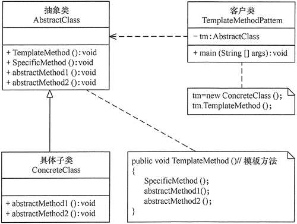

# 模板模式（TemplateMethod)
概述：模板模式，即 固定一个模板抽象类，其子类只需要实现抽象类中的可变部分（纯虚函数）即可。
# 特点：
- 有一个固定的抽象模板类，模板类里面有一个不变的方法供外部调用
- 模板类里面有多个可变的方法，供子类重写
# 优缺点：
优点：
- 使用模板类可以极大程度的重用不变的代码，同时保留了可变部分的扩展性，符合开闭原则
缺点:
- 只要模板抽象类中不变的部分需要改变，整个模板具体类都将乱套
- 模板抽象类的实现类都必须严格符合不变方法的要求
# 应用场景：
- 算法整体步骤很固定，只有局部代码会被改变时
- 实现类的行为非常固定，只有少部分行为不同时
# 模板模式的结构与实现
模板模式的结构

模板模式的实现
代码如下：
TemplateMethod 1
2
3
4
5
6
7
8
9
10
11
12
13
14
15
16
17
18
19
20
21
22
23
24
25
26
27
28
29
30
31
32
33
34//抽象类 论文模板
class AbstractClass {
public:
void TemplateMethod(){
SpecificMethod();
AbstractMethod1();
AbstractMethod2();
}
void SpecificMethod(){
cout << "这是一篇论文模板" << endl;
}
virtual void AbstractMethod1() = 0;
virtual void AbstractMethod2() = 0;
};
//实现类 具体论文
class ConcreteClass : public AbstractClass {
virtual void AbstractMethod1() {
cout << "自定义论文标题" << endl;
}
virtual void AbstractMethod2() {
cout << "自定义论文内容" << endl;
}
};
int main() {
AbstractClass* ac = new ConcreteClass();
ac->TemplateMethod();
}
//运行结果:
//这是一篇论文模板
//自定义论文标题
//自定义论文内容
结语：模板模式适用于 最大程度地重用不变的代码，且保持可变代码的灵活性。但可变代码部分不应该过多
参考文献：
- 《设计模式：可复用面向对象软件的基础》